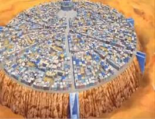

อลาบัสต้า อาบาตาคัม

พอเข้ามาแกรนด์ไลน์มาได้เข้าใจถึงสภาพอากาศที่แปรปรวน กับการเดินทางโดยใช้ล็อกโพสเดินทางจากเกาะหนึ่งไปอีกเกาะหนึ่ง จนไปพอถึงที่วิสกี้พีค จึงไปพัวพันกลุ่มนักล่าค่าหัวบนเกาะที่เป็นคนของบริษัทบาร็อกเวิร์คส์ โดยทราบถึงตัวจริงของบอสคือ ครอคโคไดล์ 1 ใน 7 เทพโจรสลัด โดยต้องหนีจากการไล่ล่า กับพาตัวเจ้าหญิงวีวี่ไปส่งที่อลาบาสต้า พอมาถึงลิตเติ้ล การ์เด้นก็ได้เห็นคนยักษ์ในตำนานต่อสู้กันกับช่วยคนยักษ์จากพวก Mr.3 กับ Mr.5 ของบาร็อกเวิร์คส์ ทั้งยังหลอกพวกบาร็อกเวิร์คส์ว่าพวกตนตายแล้ว กับได้เอเทอนอลโพสในการเดินทางไปอลาบาสต้า แต่การดินทางต้องหยุดแวะพักที่เกาะดรัมเพื่อพานามิไปหาหมอ โดยสู้กับวาโปลราชาจอมชั่วร้าย แล้วได้ช็อปเปอร์เรนเดียร์ จมูกน้ำเงิน ที่กินผลปีศาจจนเป็นเรนเดียร์มนุษย์ที่มีความรู้ทางการแพทย์มาเป็นพวก พอไปถึงอลาบาสต้า ลูฟี่ได้พบกับเอสผู้ที่เป็นพี่ชาย แล้วแยกทางกันกับเดินทางไปหาคณะปฏิวัติ โดยทั้งกลุ่มต้องผจญกับทะเลทรายบนเกาะแต่พอถึงยูบาก็ทราบว่าตนต้องกลับไปทางเดิมเพราะฐานของคณะปฏิวัติอยู่ตรงเมืองข้าง ๆ ที่ตนพวกตนแวะซื้อของบนเกาะ จนลูฟี่คิดว่าจะไปจัดการกับครอคโคไดล์ ซึ่งเป็นทางที่ดีที่สุด เพราะเห็นว่าไม่ว่าทางไหนมีคนต้องตายกันหมด แต่ทั้งกลุ่มก็ติดกับจนถูกขังไป แต่โชคดีซันจิกับช็อปเปอร์วางแผนช่วนหนีออกมาได้ ขณะเดินทางไปที่เมืองหลวง ลูฟี่สู้กับครอคโคไดล์จนแพ้ ส่วนกลุ่มหมวกฟางที่เหลือไที่เมืองหลวงต้องสู้กับพวกบาร็อกเวิร์คส์จนกำจัดพวกระดับสูงจนหมด จนลูฟี่ขี่เปรูกลับมาสู้ครอคโคไดล์ทั้งที่มองจุดอ่อนของครอกโคไดล์ออกแต่ก็แพ้ ทางกลุ่มหมวกฟางต้องหาระเบิดเพื่อหยุดการระเบิด แต่พอเจอระเบิดนั้นระเบิดเป็นระเบิดเวลาเปรูที่เป็นทหารอาสาบินเอาระเบิดไปทิ้งซึ่งเป็นการฆ่าตัวตาย แล้วลูฟี่ที่รอดตายก็ไปท้าครอคโคไดล์อีกครั้งจนชนะ แล้วฝนก็ตกลงมาอีกครั้ง สงครามที่ไม่มีการหยุดก็หยุดลง โดยหลังจากงานเลี้ยงกลุ่มหมวกฟางคิดจะเดินทางต่อ จึงให้เวลาวีวี่ในการคิด โดยพอไปถึงเรือพบกับMr.2 ที่ออกเรือไม่ได้จงขอร่วมเดินทางด้วย กลุ่มหมวกฟางจะไปรับวีวี่ Mr.2 อาสาถ่วงเวลา จนกลุ่มหมวกฟางไปถึงจุดนัดพบได้จากลากับวีวี่ แลวหนีจากกองทัพเรือสำเร็จ แล้วนิโค โรบินรองบอสของบาร็อกเวิร์คส์มาขอเข้ากลุ่ม ทางเปรูที่รอดตายแต่เจ็บหนะกจึงกลับไปที่วังก็พบกลุมศพของตน จึงไปบอกว่าตนมมีชีวิตจึงถูกต้อนอย่างดี